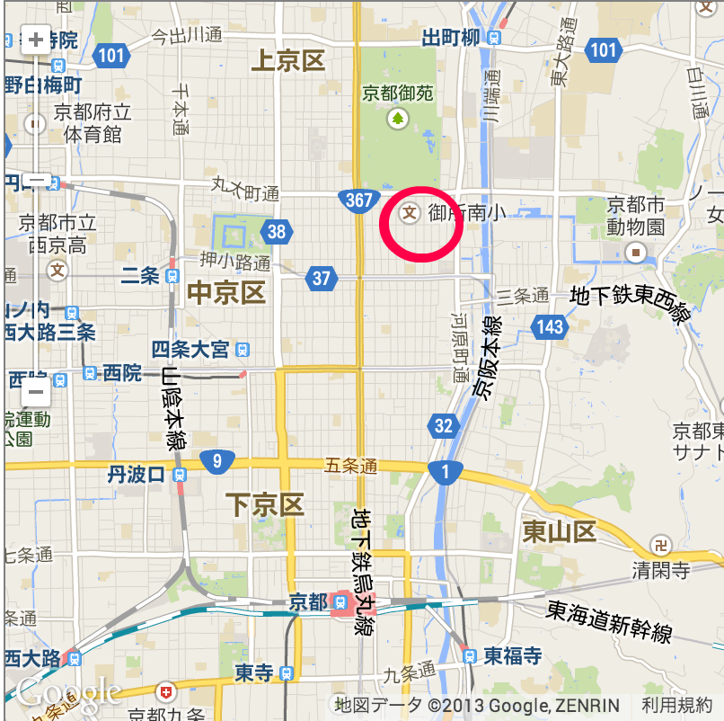
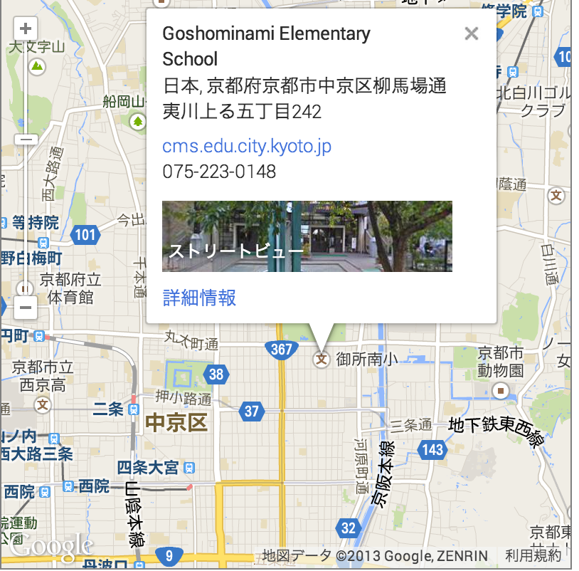
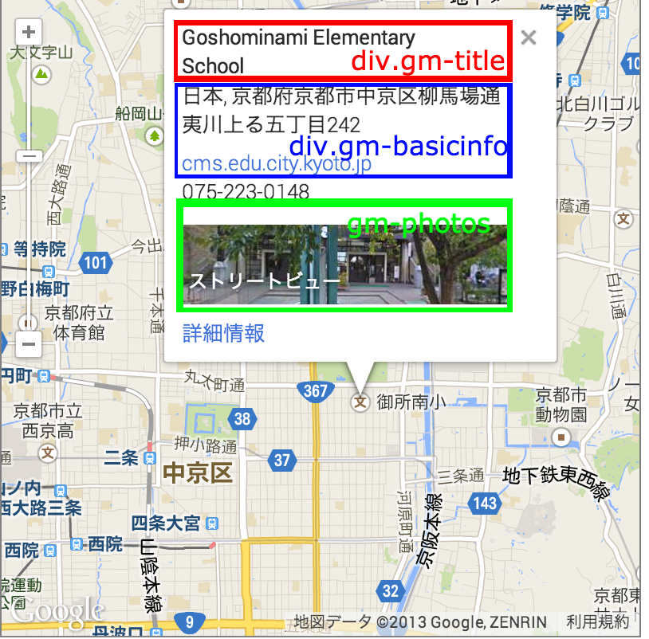

この記事はjQuery Advent Calender 2013の24日分の記事です。11月からWebServiceを作りはじめて2ヵ月がたとうとしてます。PHPもJavaScriptも使い始めて間がなくその場で考えれる方法で何とか切り抜けてきました。Serviceの方はGoogleMapを使ったものです。GoogleMapAPIから情報を取得するのにjQueryを利用させて貰ってます。APIを利用するときにかなりこまっている点がありました。今日の記事はその解決方法を書きます。もっと上手い方法があるようでしたらコメントを下さい。
GoogleMapAPIを使えば簡単に座標の情報を抜き出すことが出来ます。例えば、クリックした座標を取得(Example)することもできます。ただ、場所によっては座標を取得出来無いばあいがあります。画像内の赤い丸で託った部分にあるアイコンを押てみてください。
 
この場所だけでなくアイコンの置いてある場所ではinfoの吹き出し(二つめの画像)がでて座標の情報をもらうことは出来ません。このアイコンから情報を取ることが問題です。
まず、アイコンをクリックしたら出て来るinfowindowの要素について。

この吹き出しは３つの情報を提供しています。div.gm-title,div.gm-basicinfo,div.gm-photosです。緯度と経度が取得できないのでgm-titleの情報を緯度と経度に変換します。GoogleMapAPIを使えば簡単に変換ができます。
codeAddress = (function(mapTitle){
// 場所の名前からLatLngに切替する関数
geocoder.geocode( { 'address': mapTitle}, function(results, status) {
if (status == google.maps.GeocoderStatus.OK) {
var r = results[0].geometry.location
r = "(lat,long) = "+r.lat()+","+r.lng();
}else{
var r = 'Geocode was not successful for the following reason: ' + status;
}
$('#lat').text(r);
});
});
さらに問題となるのは、吹き出し(infowindow)が出て来るのに時間がかかっているという点です。アイコンをクリックしたあとGoogleMapAPIが通信を行ってサーバから情報を取得しているということです。このことによって遅延処理をjQueryを使って行いました。
遅延処理についてはDeferredを使っています。詳しくは、「jQueryのDeferredとPromiseで応答性の良いアプリをー実践編」を見るといいでしょう。 遅延の処理程度ではありがたみを感じにくいと思います。しかし通信の処理などで威力を発揮してくれるものみたいです。
遅延用の関数を登録しておきます。
$.fn.timeout = (function(time){
return $.Deferred(function(dfd){
setTimeout(dfd.resolve,time);
}).promise();
});
以下の関数をマップがクリックされた時に実行されるように登録しておきます。
// アイコンが有る場所をクリックして場所を取得する関数
var registMapEvent = (function(){
return (function(){
$.fn.timeout(1000).then(function(){
var spotTitle = $('.gm-title').text()
var spotAddress = $('.gm-basicinfo').text();
// spotTitleが前の状態と変ってないならなにもしない
// infowindowを閉じなかった場合の処理
if(spotTitle!= preTitle && spotTitle)
preTitle = spotTitle
else
return;
// 大体の住所を取得する。
var tmp = spotAddress.toString().split(',');
// 出来ないならおわる。
if(tmp.length<1)
return
// 2番目の情報が適切なもののきがする
spotAddress = tmp[1];
var result = "SpotName:"+spotTitle;
$('#result').text(result);
// 緯度と経度を表示
codeAddress(spotTitle);
});
});
});
実行例
この記事で紹介した方法は@sssAlchemy君と見付けたものです。私１人では解決することは困難な問題でした。
もっといい実装があれば是非教えてください！。